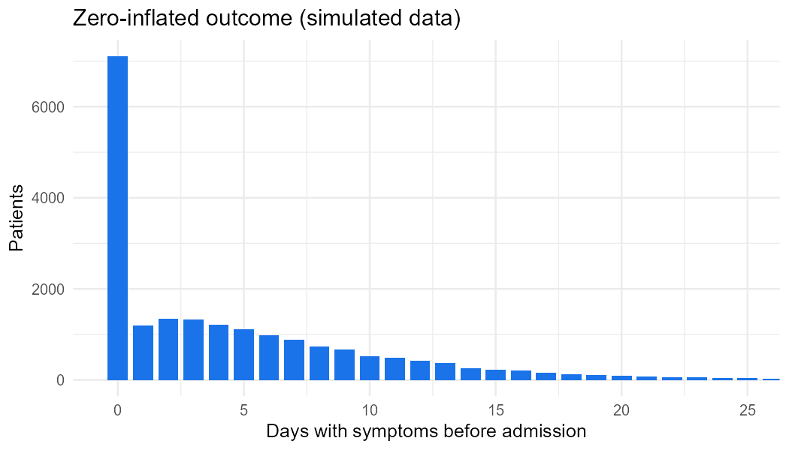
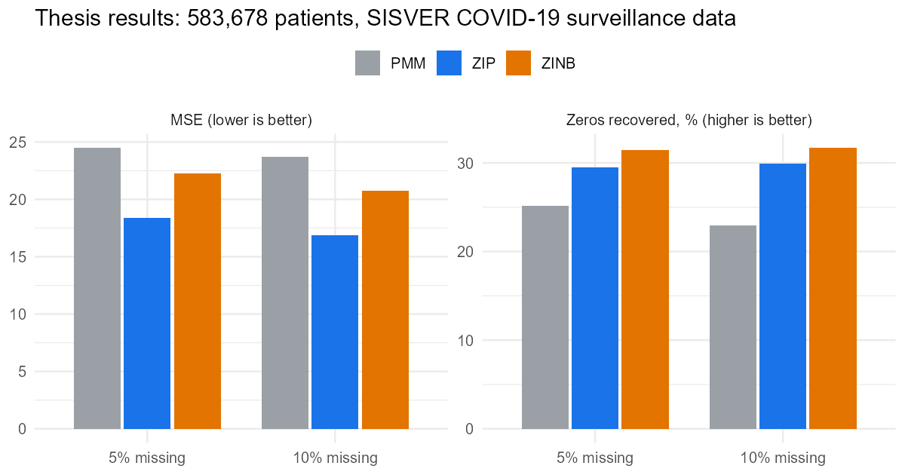
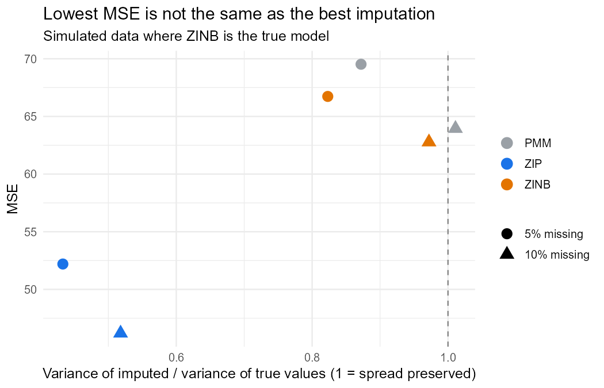

Code
include_graphics("figures/outcome_distribution.png")
PMM vs zero-inflated Poisson vs zero-inflated negative binomial
Main findings:
include_graphics("figures/outcome_distribution.png")
The thesis checked the count models in sequence. Here is the same check on the simulated cohort:
kable(models, col.names = c("Model", "AIC", "Dispersion ratio", "Predicted zeros",
"Observed zeros", "Predicted / observed zeros"))| Model | AIC | Dispersion ratio | Predicted zeros | Observed zeros | Predicted / observed zeros |
|---|---|---|---|---|---|
| Poisson | 144512.92 | 6.830 | 443.138 | 6041 | 0.073 |
| NegBin | 86502.80 | 0.831 | 5148.040 | 6041 | 0.852 |
| ZIP | 101604.32 | 2.032 | 6040.431 | 6041 | 1.000 |
| ZINB | 83003.59 | 0.995 | 6038.741 | 6041 | 1.000 |
How to read it: - Poisson badly underpredicts zeros and is overdispersed. - Negative binomial fixes the dispersion but still misses zeros. - ZIP gets the zeros right but stays overdispersed. - ZINB fixes both. Same pattern as in the original data.
include_graphics("figures/thesis_results.png")
thesis |>
select(method, missing_pct, m, MSE, RMSE, MAE, zeros_recovered_pct, imputation_time) |>
kable(col.names = c("Method", "% missing", "m", "MSE", "RMSE", "MAE",
"Zeros recovered (%)", "Time"))| Method | % missing | m | MSE | RMSE | MAE | Zeros recovered (%) | Time |
|---|---|---|---|---|---|---|---|
| PMM | 5 | 5 | 24.48 | 4.95 | 3.44 | 25.13 | 27 min |
| ZIP | 5 | 5 | 18.41 | 4.29 | 2.98 | 29.51 | 2 h 4 min |
| ZINB | 5 | 5 | 22.29 | 4.72 | 3.27 | 31.41 | 2 h 43 min |
| PMM | 10 | 10 | 23.68 | 4.87 | 3.46 | 22.95 | 1 h 36 min |
| ZIP | 10 | 10 | 16.86 | 4.11 | 2.94 | 29.94 | 8 h 21 min |
| ZINB | 10 | 10 | 20.74 | 4.55 | 3.24 | 31.68 | 10 h 45 min |
An imputation is a random draw from a predictive distribution. Its MSE against the truth is
\[ \text{MSE} = \underbrace{(\text{bias})^2}_{\text{model}} + \operatorname{Var}(Y) + \operatorname{Var}(\tilde Y), \]
so a method whose draws vary less scores better, even when its model is wrong. In the simulation the true model is ZINB:
include_graphics("figures/mse_vs_variance.png")
demo |>
select(missing_pct, method, MSE, MAE, zeros_recovered_pct, variance_ratio, seconds) |>
kable(digits = 2, col.names = c("% missing", "Method", "MSE", "MAE",
"Zeros recovered (%)", "Variance ratio", "Seconds"))| % missing | Method | MSE | MAE | Zeros recovered (%) | Variance ratio | Seconds |
|---|---|---|---|---|---|---|
| 5 | PMM | 69.53 | 5.71 | 42.42 | 0.87 | 0.5 |
| 5 | ZIP | 52.20 | 5.14 | 42.92 | 0.43 | 39.4 |
| 5 | ZINB | 66.73 | 5.60 | 43.09 | 0.82 | 47.5 |
| 10 | PMM | 63.95 | 5.59 | 41.82 | 1.01 | 0.3 |
| 10 | ZIP | 46.20 | 5.00 | 43.58 | 0.52 | 31.0 |
| 10 | ZINB | 62.78 | 5.50 | 43.53 | 0.97 | 41.6 |
What the simulation shows: - ZIP’s imputations keep only about half of the real variance. Analyses that use them would report standard errors and confidence intervals that are too small. - ZINB and PMM keep the spread.
Conclusion: choose imputation models for distributional fidelity and valid inference (Rubin’s rules), not only for point error.
The thesis used countimp. The demo uses a small reimplementation with the same logic: bootstrap the observed cases, fit pscl::zeroinfl, then draw a structural-zero indicator and a count.
# Custom MICE imputation methods for zero-inflated counts ----------------------
#
# The thesis used the `countimp` package (methods "zip" and "zinb"). This file
# is a small reimplementation of the same idea so the demo runs on current R:
#
# 1. Bootstrap the observed cases (approximates draws from the posterior
# of the model parameters, so between-imputation variance is kept).
# 2. Fit a zero-inflated Poisson or negative binomial model on the bootstrap sample.
# 3. For each missing case, draw a structural-zero indicator from the zero
# part and, if it is not a structural zero, a count from the count part.
#
# mice finds these functions by name: method = "zip_boot" calls mice.impute.zip_boot().
impute_zi <- function(y, ry, x, wy, dist) {
if (is.null(wy)) wy <- !ry
obs <- data.frame(y = y[ry], x[ry, , drop = FALSE])
boot <- obs[sample(nrow(obs), replace = TRUE), , drop = FALSE]
fit <- pscl::zeroinfl(y ~ ., data = boot, dist = dist)
new <- data.frame(x[wy, , drop = FALSE])
p_zero <- predict(fit, newdata = new, type = "zero")
mu <- predict(fit, newdata = new, type = "count")
n <- sum(wy)
counts <- if (dist == "poisson") rpois(n, mu) else rnbinom(n, size = fit$theta, mu = mu)
as.integer(ifelse(rbinom(n, 1, p_zero) == 1, 0L, counts))
}
mice.impute.zip_boot <- function(y, ry, x, wy = NULL, ...) impute_zi(y, ry, x, wy, "poisson")
mice.impute.zinb_boot <- function(y, ry, x, wy = NULL, ...) impute_zi(y, ry, x, wy, "negbin")Full code: github.com/AMauGomez/mice-zero-inflated